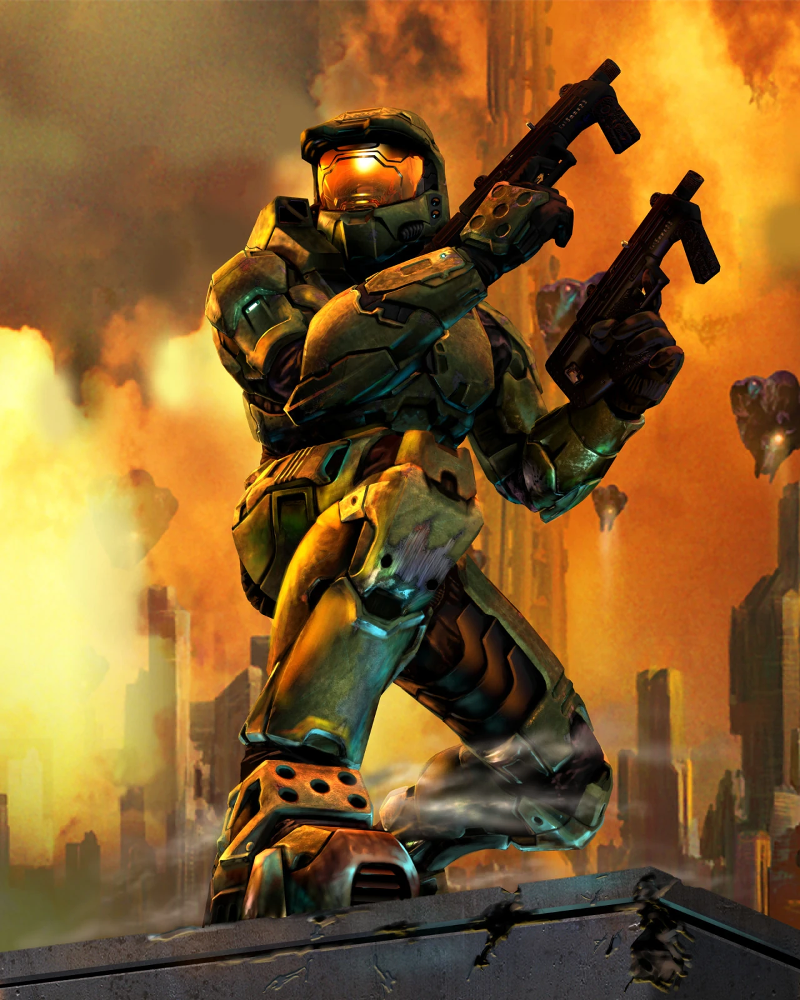
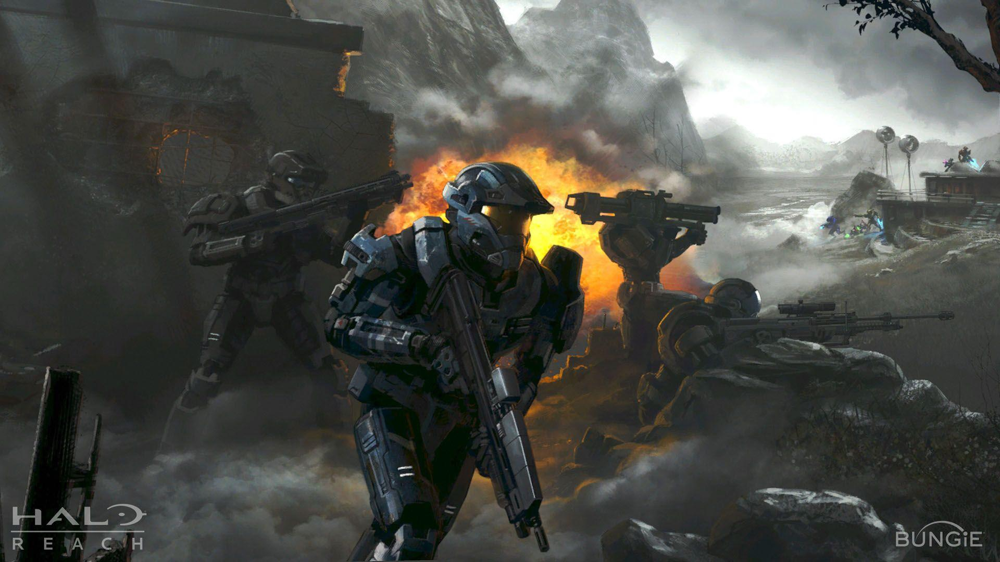
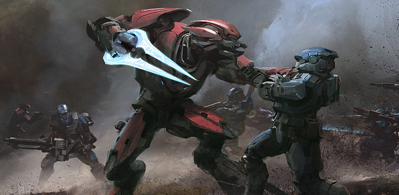

the Legend of the Master Chief

Master Chief Petty Officer John-117, also known simply by his rank as the "Master Chief" or (as is common in military culture) simply as the "Chief", is a Spartan-II supersoldier of the UNSC Navy's Special Weapons division. He served as one of the most important figures of the Human-Covenant War. After over thirty years of active duty, he is one of the most decorated war veterans of the United Nations Space Command.
Service record
By August of 2552, John had completed over two hundred military operations, including one hundred and thirty-six full campaigns; more than any other UNSC personnel on record at the time. He was one of only Two Spartans designated as Hyper lethal. Though John has commanded nearly every Spartan-II at one time or another, most of his career has been spent as fireteam leader of Blue Team. His actions during the Human-Covenant War earned him every major UNSC service medal and combat award, save for the Prisoner of War Medallion.
As the war neared its end, most of John's fellow SPARTAN-IIs were killed in action during the Fall of Reach. However, John and his AI companion Cortana fled Reach and their vessel fortuitously arrived at [Classified]
Fall of Reach

The Covenant caught Reach completely off guard, launching a surprise attack that decimated defenses and shattered the planet's sense of security. The destruction of the Visigrad relay triggered the Winter Contingency, a plan designed to safeguard humanity in the event of an overwhelming threat. Unfortunately, the alert took weeks to reach the entire planet, leaving many unprepared for the impending assault.
In this desperate hour, the Spartans emerged as humanity's last line of defense. They fought valiantly against the overwhelming Covenant forces, exhibiting unparalleled bravery and skill in the face of insurmountable odds. Their efforts were heroic, and many Spartans made the ultimate sacrifice, giving their lives to protect Reach and its inhabitants. It was their courage and determination that provided a glimmer of hope in an otherwise bleak situation, demonstrating the true spirit of the SPARTANs as defenders of humanity. As the Covenant fleet launches a massive attack on Reach, John and the Spartans are assigned to defend vital power generators essential for the planet's defense. In a race against time, John teams up with Spartans Linda-058 and James-005, working tirelessly to prevent the Covenant from accessing crucial navigation data that could spell doom for humanity.
Despite their best efforts, the Covenant overwhelms Reach's defenses, resulting in devastating losses for the UNSC. During the chaos, James is tragically killed in action, and Linda suffers severe injuries, ultimately being placed in cryostasis in the hope of future revival.
John-117's experiences during the Fall of Reach underscore the immense challenges faced by the SPARTAN-IIs as they engage in a desperate fight against seemingly insurmountable odds. The emotional toll of losing comrades and the relentless threat of the Covenant profoundly shape his journey as humanity's protector, driving him to confront the darkness ahead with unwavering resolve.

Return to Earth
After the fall of Reach, the Master Chief and his AI companion, Cortana, manage to escape the devastation aboard the Pillar of Autumn. In a strategic move, they detonate the ship's engines, resulting in the destruction of the surrounding Covenant fleet. Adrift for a week, they eventually encounter other survivors, including Sergeant Johnson and Corporal Locklear. Together, they seize control of the Covenant flagship, Ascendant Justice, to return to the Reach system.
Upon their arrival, they discover remaining Spartans and Vice Admiral Whitcomb. United in purpose, they formulate a plan to thwart the Covenant's impending invasion of Earth. The Chief and his team undertake a daring rescue of trapped Spartans, preparing for the looming threat. However, the Covenant soon discover their location, leading to a fierce battle. In a desperate bid for survival, the UNSC allies with hidden human separatists, but they are ultimately forced to flee.
Determined to disrupt the Covenant invasion fleet, the Spartans infiltrate a Covenant space station, setting it to self-destruct before making their escape. The surviving Spartans, along with Sergeant Johnson and Cortana, take the partially repaired UNSC Gettysburg back to Earth to warn of the approaching Covenant forces.
Within military circles, he is commonly referred to as "SPARTAN-117" or by the phonetic callsign "Sierra 117." Like all Spartans, John is viewed by the Covenant as a "Demon." However, he is particularly known as "the Demon," a title he earned following the destruction of a significant "alien structure."